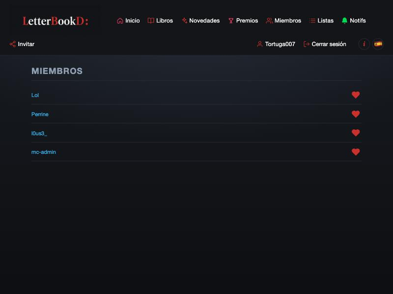

Miembros
Para qué sirve: Seguir a las personas de tu club: ver sus lecturas, reseñas y listas, y enterarte de sus nuevos favoritos. Solo ves a los miembros con los que compartes al menos un club.

Recorrido
Lista sencilla: una línea por miembro, con el nombre de usuario en el que puedes hacer clic para abrir su perfil. A la derecha, un corazón permite marcarlo como «seguido»; esto alimenta la sección «Miembros que sigo» de tu inicio. Los miembros sin ningún club en común no aparecen aquí (regla de visibilidad de letterbookd).
Cadenas de acción
Cada fila describe un disparador en la interfaz, el modal o formulario que abre, y el efecto producido.
| Disparador | Modal / Campos | Efecto |
|---|---|---|
| Nombre de usuario de un miembro | — | Abre el perfil del miembro: sus listas, lecturas y reseñas, filtradas a los clubs que compartís. |
| Icono de corazón a la derecha de un miembro | — | Sigue o deja de seguir al miembro. Un miembro seguido aparece al principio de tu inicio («Miembros que sigo») y recibes sus nuevas reseñas con prioridad en «Notifs». |